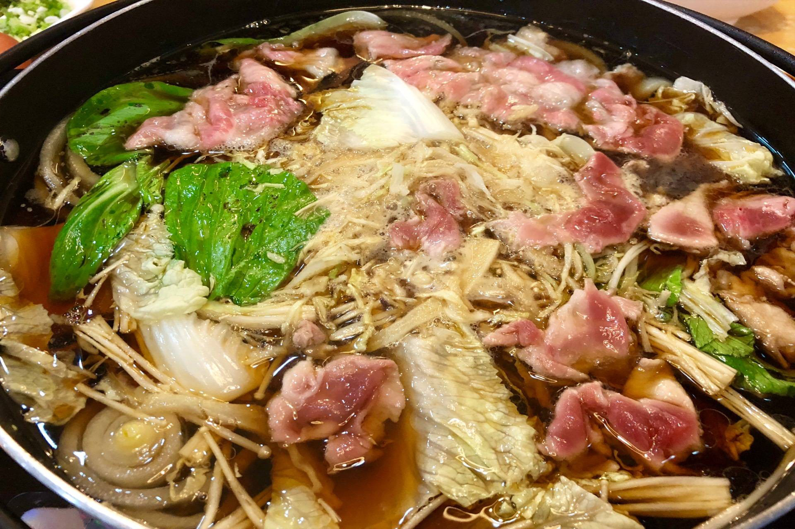
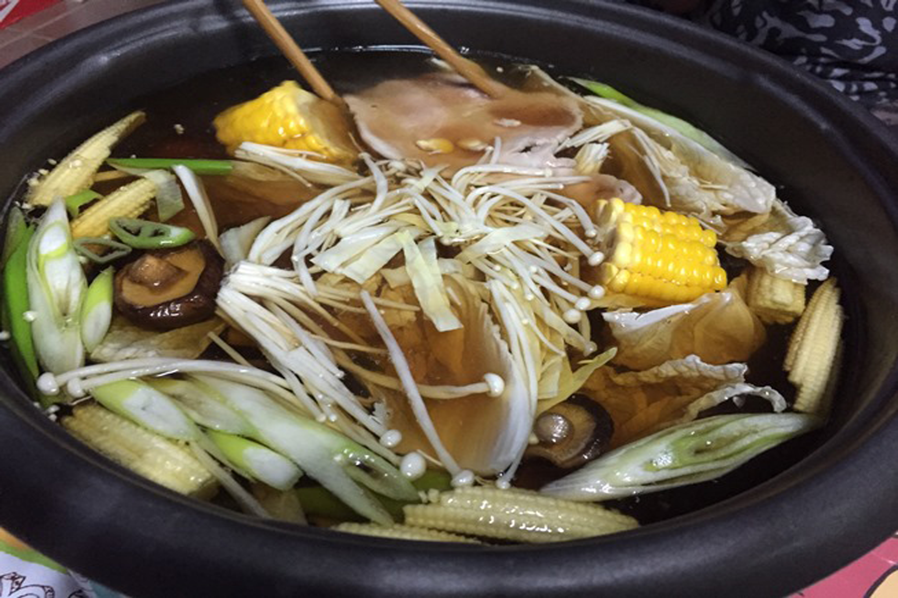

สุกี้น้ำดำ


- คนอร์ ซุปรสหมูก้อน 1 ก้อน
- โชยุ 4 ช้อนโต๊ะ
- มิริน 3 ช้อนโต๊ะ
- สาเก 3 ช้อนโต๊ะ
- น้ำตาลทราย 3 ช้อนโต๊ะ
- หอมหัวใหญ่ หั่นเสี้ยว 1 หัว
- ผักกาดขาว ตามชอบ
- ต้นหอมญี่ปุ่น ตามชอบ
- เห็ดหอมญี่ปุ่น ตามชอบ
- แครอท ตามชอบ
- เห็ดออรินจิ ตามชอบ
- เห็ดเข็มทอง ตามชอบ
- ข้าวโพดอ่อน ตามชอบ
- เต้าหู้ย่าง 1 ถาด
- เนื้อหมูคุโรบูตะสไลซ์ 250 กรัม
- ไข่ไก่ออร์แกนิก 1 ฟอง
ส่วนผสม
- ทำน้ำซุป ตั้งหม้อบนเตา ใส่หอมหัวใหญ่ลงไปผัดให้ขึ้นสี แล้วใส่น้ำเปล่าลงไป เมื่อน้ำเดือด ใส่ คนอร์ ซุปรสหมูก้อน ลงไปเพื่อความหอมหวาน ปรุงรสด้วย โชยุ มิริน สาเก และน้ำตาลทราย คนให้เข้ากัน ใส่หอมหัวใหญ่ลงไปผัดให้ขึ้นสี เมื่อน้ำเดือด ใส่ คนอร์ ซุปรสหมูก้อน ลงไปเพื่อความหอมหวาน
- ใส่เครื่อง จัดเครื่องสุกี้ เช่น ผักกาดขาว ต้นหอมญี่ปุ่น เห็ดหอมญี่ปุ่น แครอท เห็ดออรินจิ เห็ดเข็มทอง ข้าวโพดอ่อน เต้าหู้ย่าง เนื้อหมูคุโรบูตะสไลซ์ หรืออื่น ๆ ตามชอบ ลงในหม้อ จัดเครื่องสุกี้ลงในหม้อ ต้ม เนื้อหมูคุโรบูตะสไลซ์ เลย!
- จัดเสิร์ฟ ตอกไข่ออร์แกนิคใส่ถ้วย ตีให้เข้ากัน ใช้สำหรับจิ้มเนื้อหมูก่อนรับประทาน เท่านี้ก็พร้อมอร่อย!
วิธีทำ
ขอบคุณข้อมูลสูตรอาหารนี้จาก